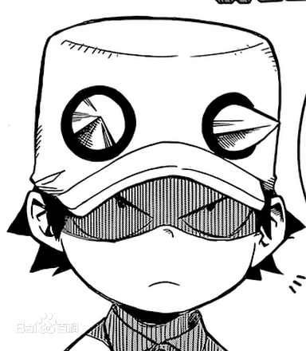
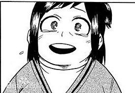

角色介绍（其他角色）
-

出水洸汰（いずみ こうた）
英雄组合沃特豪斯的儿子，是曼德勒猫的外甥。第一次和出久见面时对出久的睾丸痛下杀手。厌恶着放任“个性”存在的超人社会。在被出久救后，希望对出久说一声谢谢。
-

绿谷引子（みどりや インコ））
个性：吸引
一直陪伴在出久的身边，对出久的梦想给予鼓励。 可以吸引一些东西的能力
英雄组合沃特豪斯的儿子，是曼德勒猫的外甥。第一次和出久见面时对出久的睾丸痛下杀手。厌恶着放任“个性”存在的超人社会。在被出久救后，希望对出久说一声谢谢。
个性：吸引
一直陪伴在出久的身边，对出久的梦想给予鼓励。
可以吸引一些东西的能力